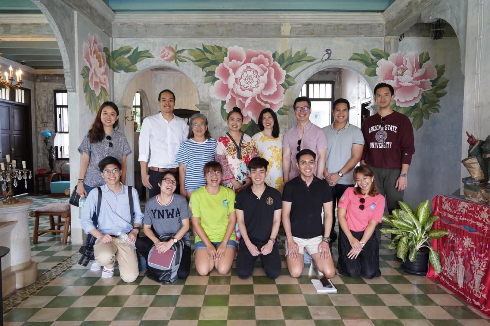
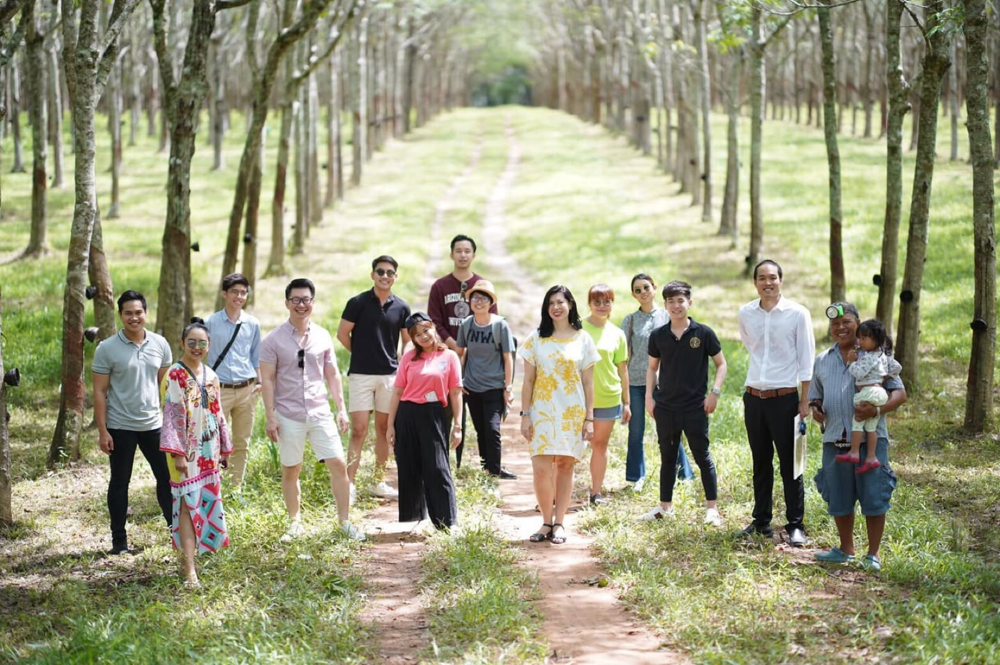
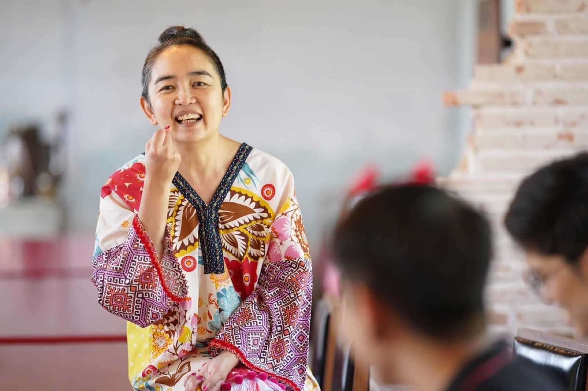
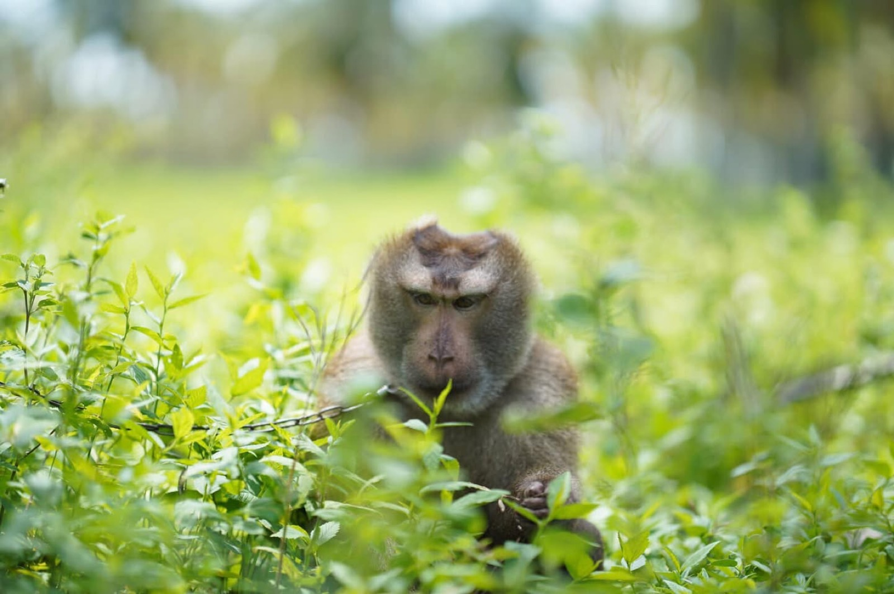
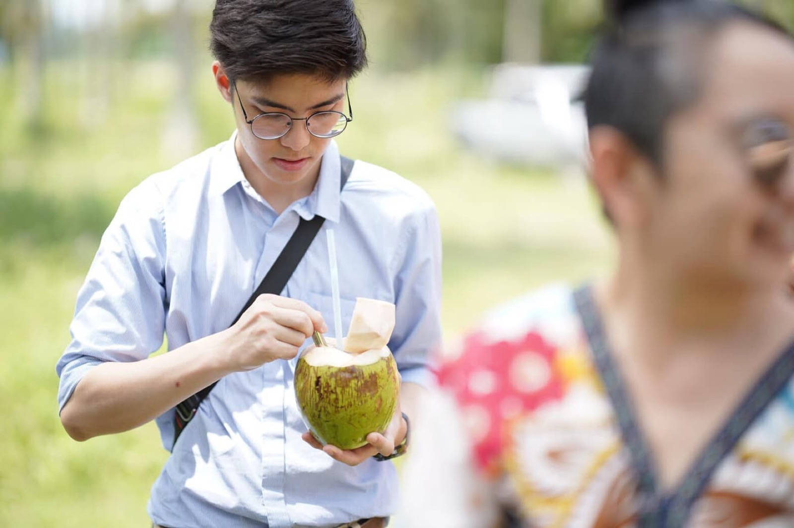

2019 · talk · event
A YSEALI delegation of over 20 visits Baan Ar-Jor





Original text in Thai
ขอบคุณ คณะ Young Southeast Asian Leaders Initiative (YSEALI) กว่า 20 ท่าน เข้าเยี่ยมชม ณ บ้านอาจ้อ เช้าวันนี้ 22/7/19 😇
กว่า 3 ชั่วโมง ฟังเรื่องเล่าความเป็นมาบ้านอาจ้อ อาชีพวิถีชุมชนชาวบ้านสวนยาง และ ชาวบ้านสวนมะพร้าว ตำบลไม้ขาว บรรยายโดย #จี้จุ๋ม #เปรี้ยวหวานมันเค็ม ครบรส 😆
ชมสาธิตกรีดยางโดย #น้าแมน มือกรีดยางระดับเทพ และ
ชมสาธิตลิงขึ้นมะพร้าว โดย #บังแอร์ พร้อมเจ้า #สมหวัง #ลิงตูดแดง แถม #ขี้อาย 😌
ตบท้ายด้วย #มะพร้าวน้ำหอม เฉาะกันสดๆ หอมหวานละมุน ดูดน้ำมิดหลอด พร้อม #คุกกี้มะพร้าว สูตรบ้านอาจ้อ กว่า 50 ปี เนื้อบางกรอบ กัดทีกลิ่นมะพร้าวกาหยีอบอวล 😋
งานนี้ทีมงานตั้งใจกันสุดๆ จัดเตรียมงานกันหลายวัน วันนี้ได้ต้อนรับกันอย่างเต็มที่ อิ่มอกอิ่มใจ หายเหนื่อยกันเลยทีเดียว 😇
แล้วเจอกันอีกนะคับ 🎉✨😊
#บ้านอาจ้อ
#มูลนิธิณรงค์หงษ์หยก
#เที่ยววิถีชุมชน